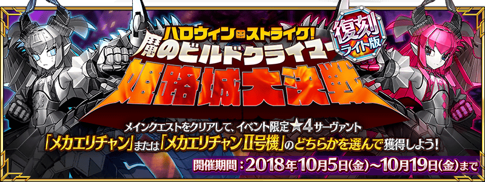
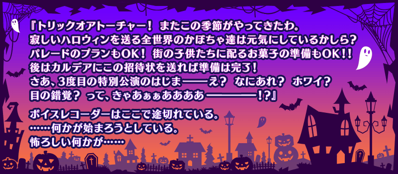
◆活動舉辦期間◆
2018年10月5日(五) 17:00～10月19日(五) 11:59
◆活動概要◆
舉辦期間限定活動「復刻:萬聖節・強襲！ 魔之建築攀登者／姬路城大決戰 輕量版」！
逐年特異點不斷變化，且不斷擴大的萬聖節活動會場傳來謎樣的SOS。
擔心不明發信者的SOS以及伊莉莎白的一行人，原本應該比照往年傳送到她所在的墓地才是…？
自2015年持續的萬聖節活動第3部就此完結！？
本活動的主線關卡分為前半與後半開放。
推進主線關卡，得到活動限定★4(SR)Servant「萬聖節的Alterego」吧！
「萬聖節的Alterego」有「機械伊莉醬」與「機械伊莉醬Ⅱ號機」的2種！
但是只可得到其中1位！
選擇1位來加入吧！
※在上次舉辦時入手其中一位活動限定★4(SR)Servant的話，本次還是可新入手尚未入手的方的活動限定★4(SR)Servant！
另外，請注意在上次舉辦時入手的活動限定★4(SR)Servant同樣能再度入手，一旦選擇其中一位後就無法入手另一位活動限定★4(SR)Servant。
※本活動為再調整2017年舉辦的期間限定活動「萬聖節・強襲！ 魔之建築攀登者／姬路城大決戰」更容易遊玩的「復刻輕量版活動」。
※一部份的關卡為日後開放。
※在上次舉辦時獲得過「聖杯」的情況，於「復刻輕量版活動」會以「傳承結晶」代替「聖杯」做為任務報酬。
◆活動參加條件◆
只限通過「第一特異點 邪龍百年戰爭 奧爾良」的Master才能參加
享受故事的主線關卡會分成前半與後半，各於以下的時間開放。
【關卡舉辦期間】
| 關卡的種類 | 舉辦期間 |
|---|---|
| 主線關卡前半 | 10月5日(五) 17:00～ 10月19日(五) 11:59 |
| 主線關卡後半& 機械伊莉醬選擇權獲得關卡 |
10月8日(一) 17:00～ 10月19日(五) 11:59 |
| 附加關卡& 【高難易度】挑戰關卡 |
10月12日(五) 17:00～ 10月19日(五) 11:59 |
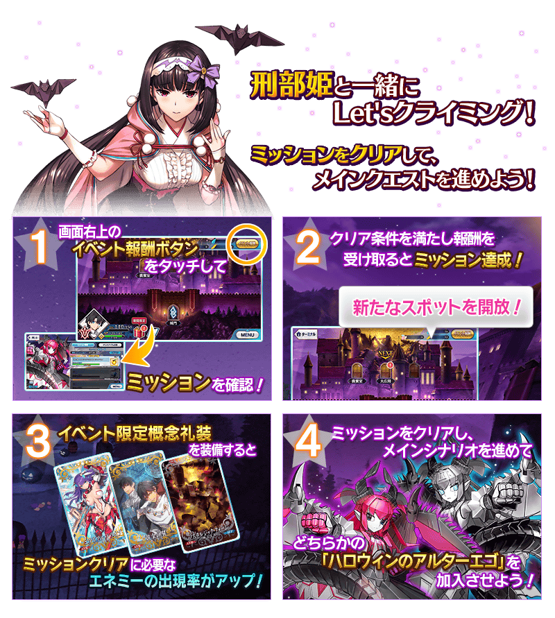
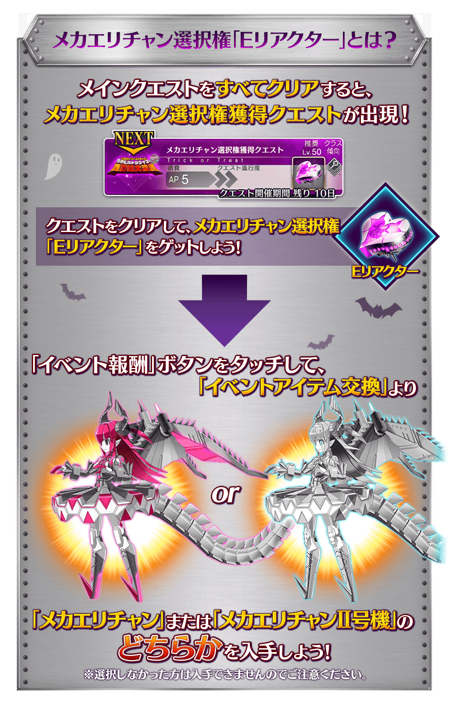※「機械伊莉醬」與「機械伊莉醬Ⅱ號機」無能力差別。
名稱、插圖、介紹、戰鬥角色、語音、及絆禮裝的插圖與介紹有所差異。
「復刻:萬聖節・強襲！ 魔之建築攀登者／姬路城大決戰 輕量版」中過去使用「E反應器」正式加入Servant也能再度交換，可靠「預備反應器」的只限於「復刻:萬聖節・強襲！ 魔之建築攀登者／姬路城大決戰 輕量版」正式加入的Servant。
請注意選擇其中一位後，持有「預備反應器」的無法入手另一位Servant。
※「預備反應器」可做為任務的報酬入手。
◆超值攻略方法・其1◆
做為活動加成篩選器的對象Servant在本活動的關卡中，攻擊威力會提升！
強化對象Servant，挑戰活動吧！
另外，被指定為筆友位的Servant不會在本活動的主線劇本登場。
※各Servant的增加量有所差異。
※關於真名尚未判明的Servant，透過主線記錄關卡的進行會讓Servant的名稱變化。
※自10月4日(四) 17:00，在Servant選擇畫面和Servant強化畫面等中，追加「下次活動對象」篩選器。
由於是只顯示於活動活躍Servant的便利功能，敬請活用。
【對象Servant】
| 職階 | 稀有度 | Servant名 |
|---|---|---|
| Saber | ★★★★ | 伊莉莎白・巴托里〔Brave〕 |
| Lancer | ★★★★ | 伊莉莎白・巴托里 |
| Caster | ★★★★ | 伊莉莎白・巴托里〔萬聖節〕 |
| Assassin | ★★★★★ | 刑部姬 |
| ★★★★★ | 克麗奧佩脫拉 | |
| ★★★★ | 卡米拉 | |
| ★★★★ | 新宿的Assassin | |
| ★★★★ | 不夜城的Assassin | |
| Berserker | ★★★★ | 黃金國的Berserker |
| Alterego | ★★★★ | 機械伊莉醬 |
| ★★★★ | 機械伊莉醬Ⅱ號機 |
【對象Servant・筆友位】
| 職階 | 稀有度 | Servant名 |
|---|---|---|
| Lancer | ★★★★★ | 玉藻前 |
| ★★★★ | 清姬 | |
| Caster | ★★★★★ | 玉藻前 |
| Berserker | ★★★★ | 玉藻貓 |
| ★★★ | 清姬 |
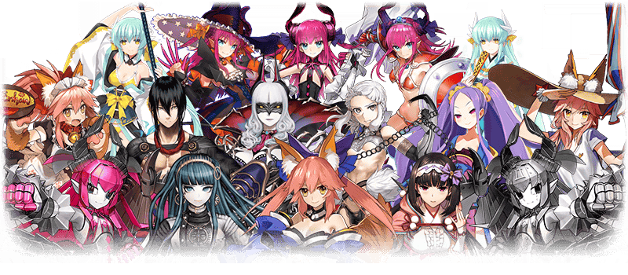
◆超值攻略方法・其2◆
裝備可在活動道具交換入手的活動限定概念禮裝「エアリアル・ドライブ」「黄金の翼」「ノスタルジック・フォーム」的話，在自由關卡中掉落活動専用道具的敵人追加出現率會提升。
※請注意於各關卡的敵人追加出現率就算顯示100％以上，效果也只有100％。
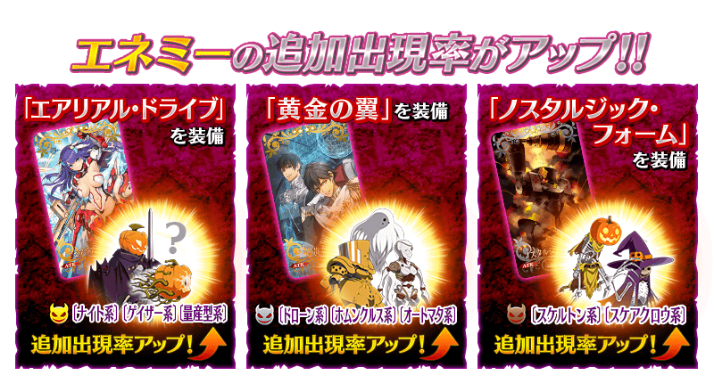
◆超值攻略方法・其3◆
裝備聖晶石召喚Pick Up的期間限定概念禮裝「トリック・オア・トリートメント」「ファントム・ナイト」「不思議の国から」的話，在期間限定活動「復刻:萬聖節・強襲！ 魔之建築攀登者／姬路城大決戰 輕量版」中活動専用道具「光砲餅乾」「火箭硬糖」「鑽頭軟糖」各自的獲得數會提升。
※請注意各關卡的道具掉落率並非100％。
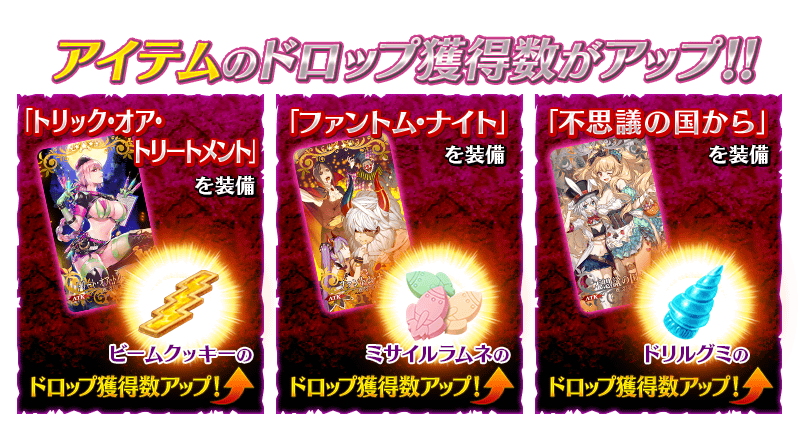
 |
★★★★★SSR |
| 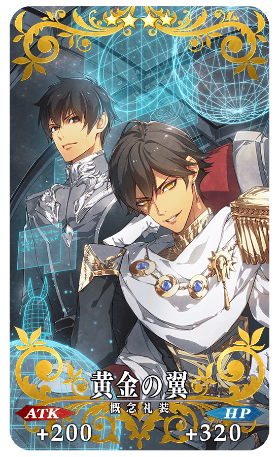 |
★★★★SR |
| 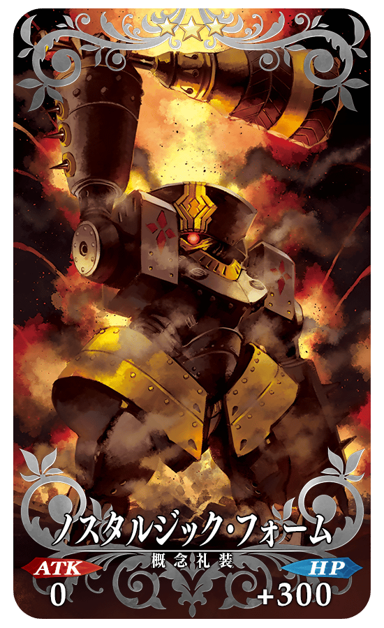 |
★★★R |
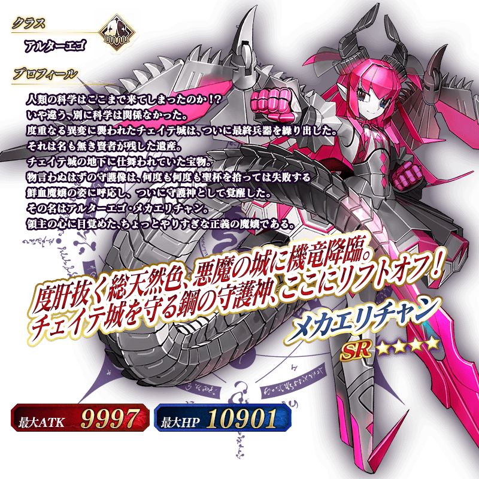
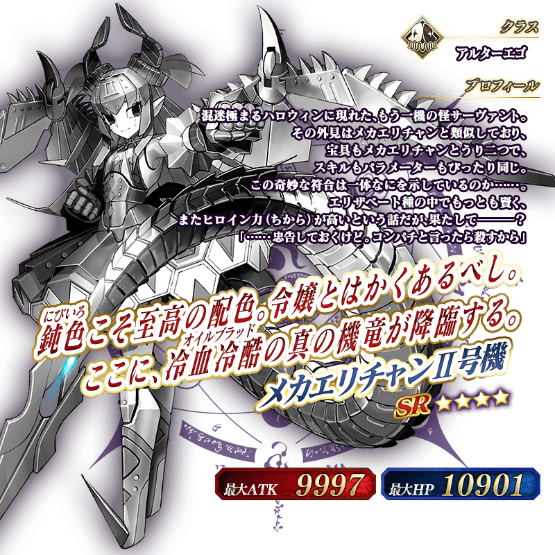
◆靈基再臨◆
使用只能靠任務報酬入手的「B顆粒」，重複4次靈基再臨的話，卡面會有所變化

※「★4(SR)機械伊莉醬」「★4(SR)機械伊莉醬Ⅱ號機」不會隨靈基再臨使戰鬥角色的外觀變化。
介紹機械伊莉醬、機械伊莉醬Ⅱ號機的寶具演出！
在「Fate/Grand Order」官方網站內的公告中，公開了「★4(SR)機械伊莉醬」「★4(SR)機械伊莉醬Ⅱ號機」的寶具演出。敬請確認。
活動専用道具可自點擊管理室(ターミナル)畫面右上「活動報酬」的「活動道具交換」畫面，交換以下的道具。
※英靈結晶・流星之芙芙ALL★4(HP)、英靈結晶・日輪之芙芙ALL★4(ATK)的交換會在通過期間限定活動「復刻:萬聖節・強襲！ 魔之建築攀登者／姬路城大決戰 輕量版」主線關卡後開放。
◆交換期間◆
2018年10月5日(五) 17:00～10月26日(五) 11:59
※交換期間結束後「光砲餅乾」「火箭硬糖」「鑽頭軟糖」「E反應器」「預備反應器」會消失。
◆能用光砲餅乾交換的道具◆
|
【活動限定概念禮裝】 【技能強化＆靈基再臨素材】 【靈基再臨素材】 【其他道具】 |
◆能用火箭硬糖交換的道具◆
|
【活動限定概念禮裝】 【技能強化＆靈基再臨素材】 【靈基再臨素材】 【其他道具】 |
◆能用鑽頭軟糖交換的道具◆
|
【活動限定概念禮裝】 【技能強化＆靈基再臨素材】 【其他道具】 |
◆能用E反應器交換的道具◆
| 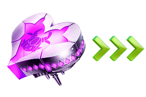 |
【活動限定Servant】 ※在通過機械伊莉醬選擇權獲得關卡後開放。 |
◆能用預備反應器交換的道具◆
 |
【活動限定Servant】 ※在本活動入手萬聖節的Alterego後，只開放入手的萬聖節的Alterego。 |
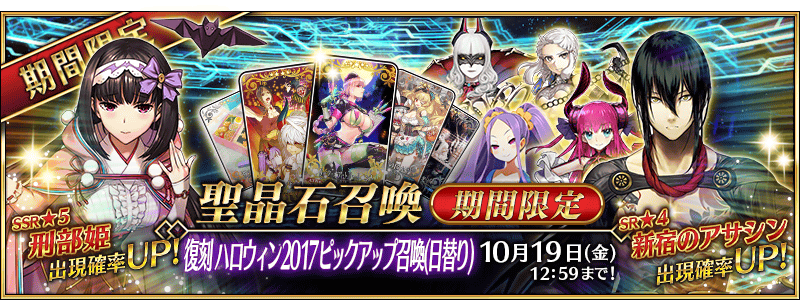
◆「復刻 萬聖節2017 Pick Up召喚(每日交替)」期間◆
期間:2018年10月5日(五) 17:00～10月19日(五) 11:59
舉辦期間限定「復刻 萬聖節2017 Pick Up召喚(每日交替)」！
變更在2017年舉辦的「萬聖節2017 Pick Up召喚(每日交替)」一部份內容進行復刻。
在期間限定活動「復刻:萬聖節・強襲！ 魔之建築攀登者／姬路城大決戰 輕量版」活躍的「★5(SSR)刑部姬」常駐Pick Up！
本次包含上述Pick Up 6位Servant！
「★4(SR)伊莉莎白・巴托里(Lancer)」「★4(SR)卡米拉」「★4(SR)新宿的Assassin」「★4(SR)不夜城的Assassin」「★4(SR)黃金國的Berserker」以每日交替Pick Up！
詳情請在聖晶石召喚畫面左下的召喚詳細確認。
做為期間限定概念禮裝的「★5(SSR)トリック・オア・トリートメント」「★4(SR)ファントム・ナイト」「★3(R)不思議的国から」登場！
裝備上述3種概念禮裝的話，在期間限定活動「復刻:萬聖節・強襲！ 魔之建築攀登者／姬路城大決戰 輕量版」中會提升活動専用道具的掉落獲得數。
◆有關Servant的注意◆
※刑部姬、伊莉莎白・巴托里(Lancer)、卡米拉、新宿的Assassin、不夜城的Assassin、黃金國的Berserker在Pick Up期間結束後仍會在故事召喚被抽出。
※關於真名尚未判明的Servant，透過主線關卡的進行會讓Servant及一部份寶具名稱變化。
◆有關概念禮裝的注意◆
※不思議の国から在Pick Up期間中，也能在友情點數召喚獲得。
※請注意自友情點數召喚抽出不思議の国から在自動變還設定登錄★3(R)概念禮裝的情況，會變成自動變還的對象。
Pick Up期間中，Pick Up Servant、期間限定概念禮裝的出現機率提升！
10次召喚中確定1張★4(SR)以上和確定1位★3(R)以上的Servant！
※確定★4(SR)以上包含Servant和概念禮裝。
| 每日交替Pick Up期間 | 每日交替Pick Up內容 |
|---|---|
| 10月5日(五) 17:00～ 10月6日(六) 22:59 |
刑部姬 伊莉莎白・巴托里(Lancer) |
| 10月6日(六) 23:00～10月7日(日) 22:59 | 刑部姬 卡米拉 |
| 10月7日(日) 23:00～10月8日(一) 22:59 | 刑部姬 黃金國的Berserker |
| 10月8日(一) 23:00～10月9日(二) 22:59 | 刑部姬 新宿的Assassin |
| 10月9日(二) 23:00～10月10日(三) 22:59 | 刑部姬 不夜城的Assassin |
| 10月10日(三) 23:00～ 10月12日(五) 22:59 |
刑部姬 伊莉莎白・巴托里(Lancer) 黃金國的Berserker |
| 10月12日(五) 23:00～ 10月14日(日) 22:59 |
刑部姬 卡米拉 新宿的Assassin 不夜城的Assassin |
| 10月14日(日) 23:00～10月15日(一) 22:59 | 刑部姬 伊莉莎白・巴托里(Lancer) |
| 10月15日(一) 23:00～10月16日(二) 22:59 | 刑部姬 卡米拉 |
| 10月16日(二) 23:00～10月17日(三) 22:59 | 刑部姬 黃金國的Berserker |
| 10月17日(三) 23:00～10月18日(四) 22:59 | 刑部姬 新宿的Assassin |
| 10月18日(四) 23:00～10月19日(五) 11:59 | 刑部姬 不夜城的Assassin |
※請注意會以每日交替變更Pick Up的Servant。
 ※上述「★5(SSR)刑部姬」的卡面為靈基再臨第2階段。
※上述「★5(SSR)刑部姬」的卡面為靈基再臨第2階段。

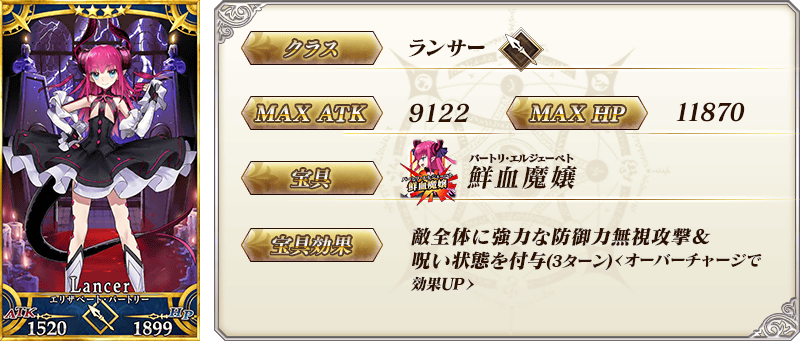
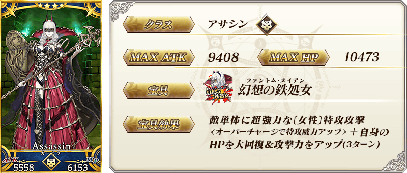※上述「★4(SR)卡米拉」的卡面為靈基再臨第2階段。


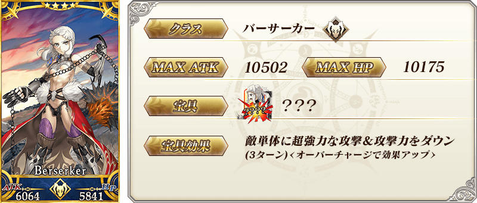※上述「★4(SR)黃金國的Berserker」的卡面為靈基再臨第2階段。
| 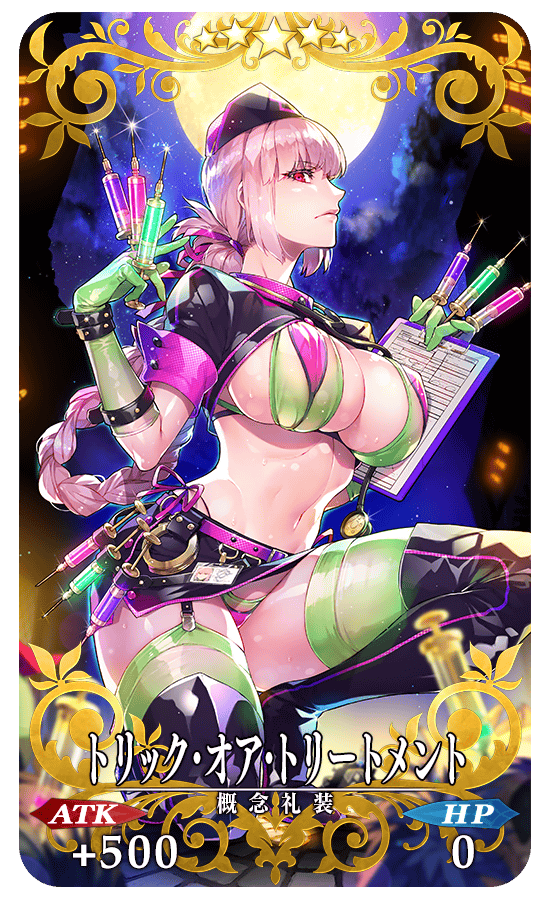 |
★★★★★SSR |
| 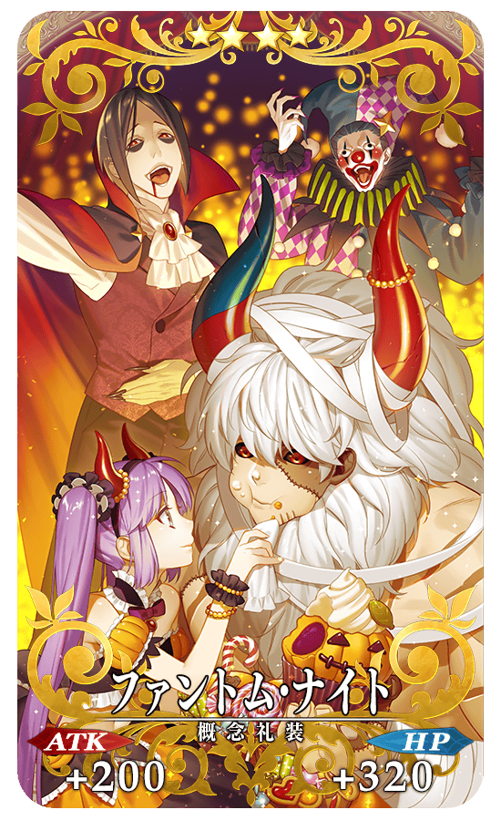 |
★★★★SR |
| 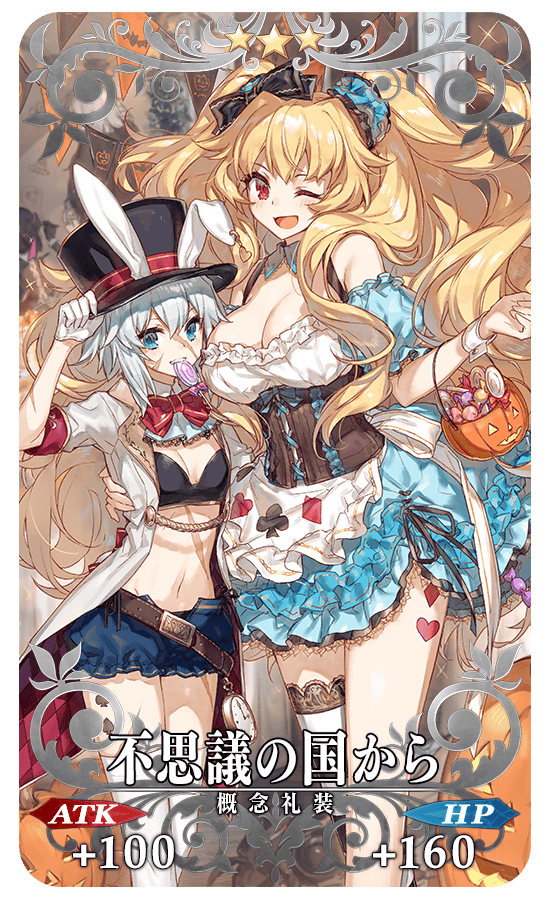 |
★★★R |

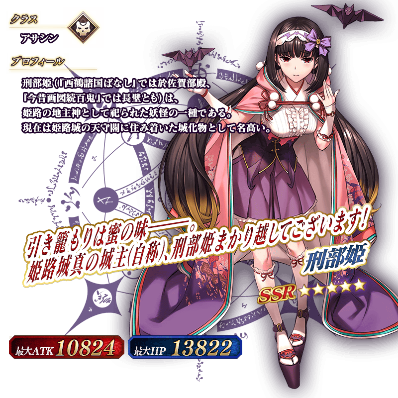※上述「★5(SSR)刑部姬」的立繪為靈基再臨第2階段。
強化刑部姬能力的特別關卡「Servant強化關卡」做為新常駐追加。
不僅進行對象Servant的強化，也可獲得聖晶石做為關卡通過報酬。
※請注意Servant強化關卡沒有冒險部份。
◆追加時間◆
2018年10月5日(五) 17:00～
◆參加條件◆
持有的強化對象Servant，必須使其最終再臨。
※未持有對象Servant的話，不會出現關卡。
※關卡沒有舉辦期限。
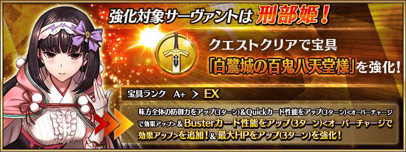
介紹刑部姬、伊莉莎白・巴托里(Lancer)、卡米拉、新宿的Assassin、不夜城的Assassin、黃金國的Berserker的寶具演出！
在「Fate/Grand Order」官方網站內的公告中，公開了「★5(SSR)刑部姬」「★4(SR)伊莉莎白・巴托里(Lancer)」「★4(SR)卡米拉」「★4(SR)新宿的Assassin」「★4(SR)不夜城的Assassin」「★4(SR)黃金國的Berserker」的寶具演出。敬請確認。